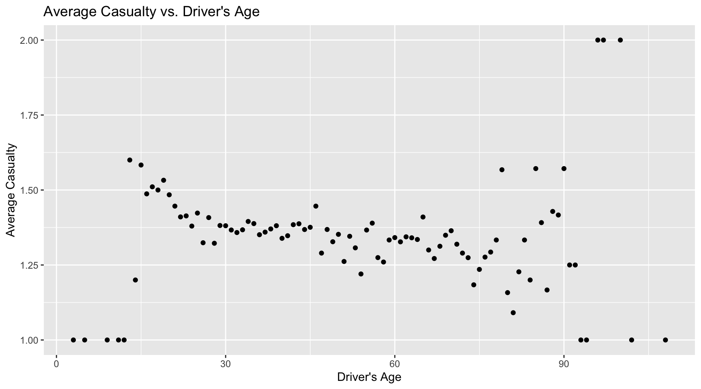
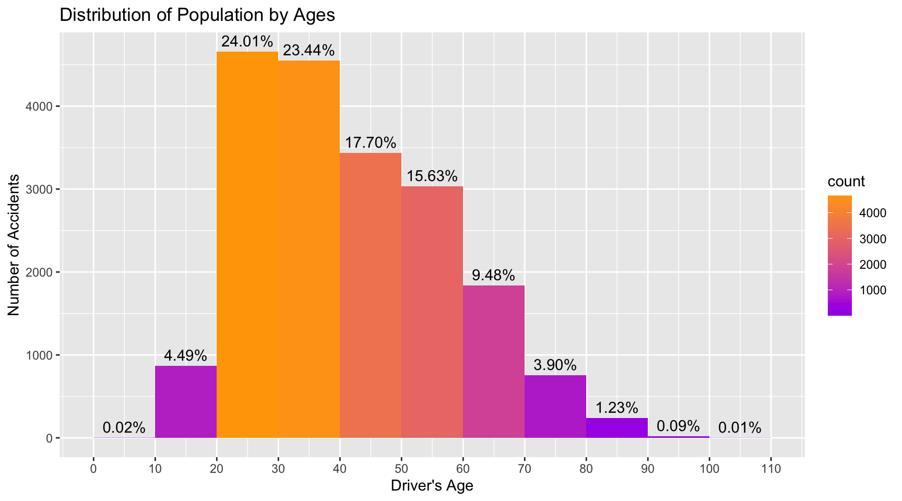
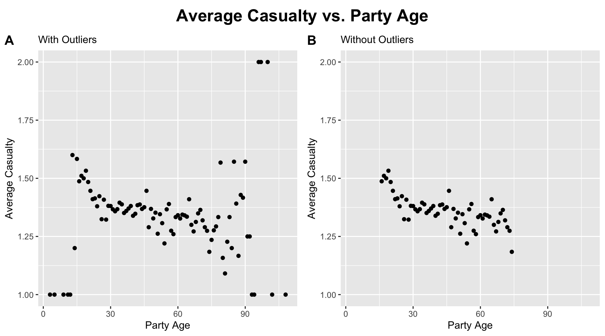
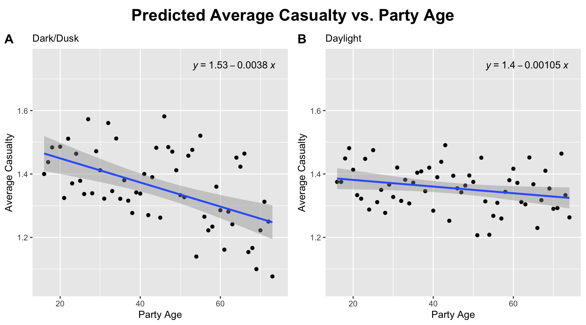
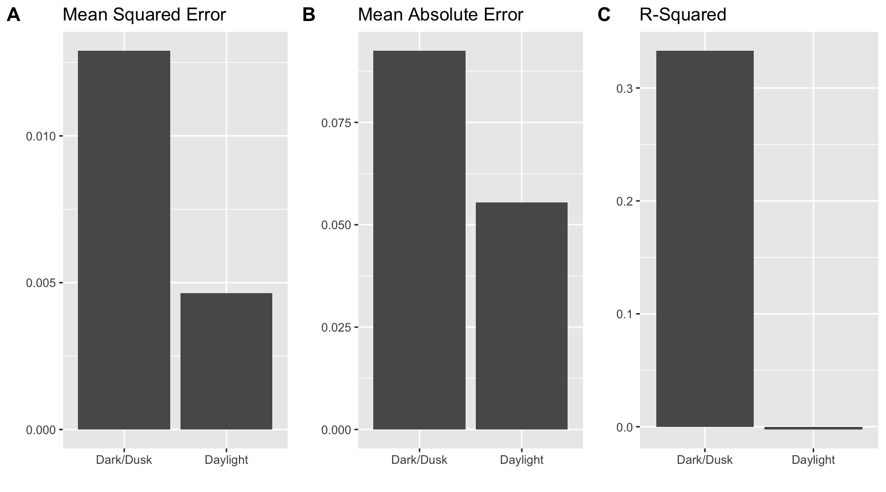

The relationship between average casualty in a car accident & driver’s age under different lighting conditions
Abstract
Based on the dataset pertaining to traffic crashes in San Francisco, CA that describe all parties involved, I set out to investigate the relationship between the age of drivers and the average number of people injured or killed in these accidents and whether they differ under dark vs. daylight lighting conditions.
After dropping unknown values and keeping only data points relevant to drivers, the data was grouped into two datasets based on the lighting conditions. Specifically, 6542 data points during dark and dusk are grouped into one dataset, while 12103 data points during daylight are grouped into another. Each dataset is then aggregated within the group to compute average casualty corresponding to each age.
The prediction results of robust linear regression model trained on these datasets suggest that there exists an inverse relationship between average casualty and driver’s age in general. It further shows that older drivers tend to cause more harm than young drivers when the car crushes take place during dark or dusk than daylight.
These findings allow us to estimate the casualty in the crash scene given the driver’s age and lighting condition, which are two easily accessible characteristics. With these info, we can send the appropriate level of medical help to the car crash scene immediately.
Background
Millions in the U.S. live in so-called “ambulance deserts”, where medical resources are scarce and ambulance services fail to respond promptly. To mitigate this issue and maximize the efficiency of medical resource allocation, it is critical that the medical center is able to infer the amount of medical help that should be sent to scenes of accident based on the severity of casualties.
This research aims to answer the said task by experimentally determining the relationship between driver’s age and average casualty in a car accident under different lighting conditions. The dataset comes from SFPD’s Interim Collision System for 2018 to year-to-date, Crossroads Software Traffic Collision Database (CR) for years 2013-2017, and the Statewide Integrated Transportation Record System (SWITRS) for all years prior to 2013.
Results
Figure 1 shows the average casualties involved in the car accidents that correspond to different drivers’ ages. While the distribution of the data is clustered around a downward sloping line between 15 and 75-years-old, there are clear outliers observed on both ends.
Figure 2, which plots the distribution of data points by ages using a histogram, shows that <1.4% of the entire dataset belong to drivers younger than 10-years-old or older than 80-years-old. The extremely limited data explains presence of outliers that heavily skew the casualty data.

By referencing both Figure 1 and 2, data points belonging to drivers younger than 15 or older than 75-years-old are identified as outliers and removed before applying any machine learning algorithms.
Figure 3 shows a comparison of the data distribution before and after the removal of outliers. Without outliers, the data follows a cleaner, negatively-correlated trend.

After splitting the dataset into two by lighting conditions and training two robust linear regression models on them, Figure 4 shows the regression lines on the testing data.
The more negative slope of the regression line for dark/dusk data suggests during dark/dusk, drivers’ age has more influence on the number of casualties involved in the car accident.
[1] 59
[1] 59
Mean Squared Error:
Mean Absolute Error: 0.0129
R-Squared: 0.0925
Confidence interval: -0.006395869 -0.002737083[1] 59
[1] 59
Mean Squared Error:
Mean Absolute Error: 0.00464
R-Squared: 0.0555
Confidence interval: -0.003256632 -0.0006200045`geom_smooth()` using formula = 'y ~ x'Warning: Removed 2 rows containing non-finite outside the scale range
(`stat_smooth()`).Warning: Removed 2 rows containing non-finite outside the scale range
(`stat_poly_eq()`).Warning: Removed 2 rows containing missing values or values outside the scale range
(`geom_point()`).`geom_smooth()` using formula = 'y ~ x'
To evaluate the models’ performance and compare them, a bar graph
Figure 5 shows

Discussion
References
“USM Researchers.” Millions in U.S. Live in “Ambulance Deserts,” spectrumlocalnews.com/me/maine/health/2023/06/27/usm-researchers–millions-in-u-s–live-in–ambulance-deserts—putting-lives-at-risk. Accessed 6 Aug. 2024.